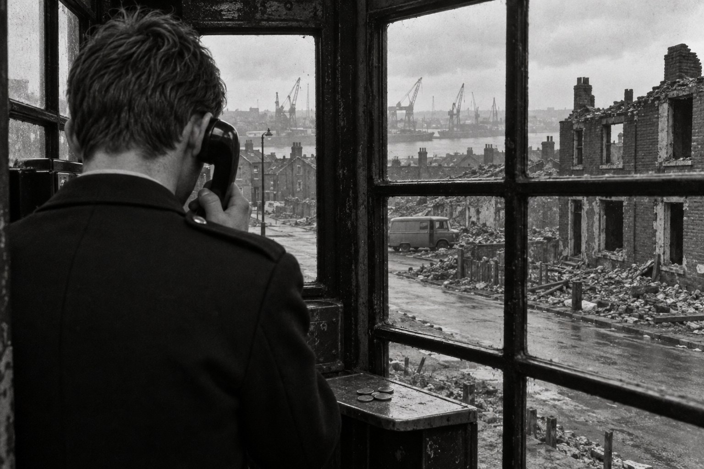

Кадет

Глава первая. Вызов к телефону
Ты помни обо мне, когда уйду я прочь,
Далёко прочь, в безмолвную страну.— Кристина Россетти, «Помни» (1862)
В половине восьмого утра в задней комнате участка пахло мокрыми плащами и вчерашним чаем, и первым делом кадет Роберт Льюис мыл кружки. Кружек было одиннадцать, у каждой был свой хозяин, и перепутать их считалось проступком посерьёзнее, чем перепутать статьи закона о кражах. Белую кружку сержанта Хеппла с отбитой ручкой полагалось мыть последней и ставить вверх дном на чистое полотенце. Этому Робби научился в первую же неделю прикрепления, раньше, чем заполнять журнал происшествий.
Кадет ещё не был полицейским. С шестнадцати лет его брали на жалованье, одевали в тёмный китель и фуражку, учили строю, праву и первой помощи, а потом прикрепляли к участку, чтобы он смотрел, как работают взрослые. Прав у кадета не было никаких: он не мог никого задержать и ни о чём не мог спросить именем закона, а на улицу выходил только вместе с констеблем. Зато он мыл кружки, подшивал рапорты, бегал в лавку за сигаретами для дежурного и снимал трубку, когда остальные были заняты. В девятнадцать лет, если ничего не случится, его приведут к присяге констебля. До этого оставалось больше года, и дни Робби старался считать не чаще раза в неделю.
Окно задней комнаты выходило на Байкер. Ещё недавно там до самой реки тянулись одинаковые ряды кирпичных домов в два этажа, с общими стенами и крошечными задними дворами, где сушилось бельё и стояли угольные ящики. Половину этих рядов уже снесли. Между уцелевшими улицами лежали пустыри с битым кирпичом, а на одном пустыре поднималась длинная глухая стена нового дома, которую в городе так и называли — Стеной. Строили её по проекту архитектора, приехавшего из Швеции, и старики в пабах на Шилдс-роуд говорили о нём с тем же недоверием, с каким говорили о шведской погоде. Робби вырос ниже по реке, в Уолсенде, и Байкер знал плохо, но по утрам ему нравилось смотреть, как на пустыре ворочается экскаватор. Работа шла, хотя никто вокруг не понимал, для кого.
Он вытер последнюю кружку и раскрыл журнал. За минувшие сутки дежурные записали две кражи из газовых счётчиков — тех, что с прорезью для монет, которые вскрывают отвёрткой за полминуты, — драку у паба на Шилдс-роуд, пропавшую собаку, которая к вечеру вернулась сама, и жалобу миссис Чарлтон на шум в пустых домах. Против жалобы миссис Чарлтон дежурный приписал карандашом: «См. предыдущие». Предыдущих за месяц было четыре.
Сержант Хеппл пришёл без десяти восемь, повесил плащ на свой крюк и молча взял свою кружку. Он прослужил двадцать шесть лет в городской полиции Ньюкасла, пока три года назад её не слили с полицией графства в одну Нортумберлендскую, и до сих пор говорил «у нас, в городской» таким тоном, каким вдовы говорят о покойном муже. Был он большой, медленный и почти всегда молчал. Робби поначалу его боялся, потом понял, что Хеппл просто бережёт слова, как другие берегут спички.
— Журнал, — сказал Хеппл.
Робби подал журнал. Хеппл прочёл его, шевеля губами только на жалобе миссис Чарлтон, и вернул.
— Собаку вычеркни. Нашлась — значит, не было.
В начале десятого, когда Робби подшивал вчерашние рапорты, из коридора крикнул дежурный констебль Тейт:
— Льюис! Тебя к телефону. Мать.
На службу Робби не звонил никто и никогда. Дома телефона не было, на всей их улице он был только в угловой лавке миссис Пёрвис, и звонили оттуда, когда кто-нибудь рожал или умирал. Робби взял трубку и сразу услышал за материным дыханием звяканье колокольчика над дверью лавки.
— Робби, — сказала мать. — Эндрю умер.
Он ничего не ответил, потому что не знал, что на это отвечают.
— В Оксфорде, — сказала мать. — К Айрин утром приходил полицейский, здешний. Сказал, что Эндрю нашли мёртвым в Оксфорде, а подробности даст тамошняя полиция. Оставил номер. Айрин сидит у себя на кухне и ни с кем не говорит. Она тебя спрашивает.
— Меня?
— Ты же в полиции.
— Мам, я кадет.
— Всё равно, — сказала мать и повесила трубку, потому что у миссис Пёрвис разговор стоил денег.
Робби постоял у телефона. Эндрю был его двоюродный брат, сын младшего брата отца, на несколько лет старше, и с тринадцати лет жил у тёти Айрин. В детстве Робби ходил за ним по пятам: на реку, на свалку за верфью, на футбол, куда Эндрю пролезал без билета под забором и протаскивал за шиворот и его. В восемнадцать Эндрю уехал в Лондон. Писал он редко, открытками, приезжал ещё реже. В последний раз Робби видел его на Рождество три года назад: волосы до плеч, замшевая куртка, от которой пахло дождём и чужими сигаретами. Эндрю сунул ему фунт и сказал, что на юге люди живут так, будто завтра никогда не наступит. Робби тогда не понял, хорошо это или плохо.
Он вернулся в заднюю комнату. Хеппл поднял глаза от бумаг.
— Брат двоюродный, — сказал Робби. — Умер. В Оксфорде.
Хеппл помолчал, будто отсчитывал слова.
— До обеда, — сказал он. — Не до вечера. Не управишься к обеду — позвони. Тогда скажу, что до вечера.
Робби кивнул, надел фуражку и вышел. Только в автобусе на Уолсенд, когда кондуктор протянул руку за платой, он заметил, что на плече у него так и висит полотенце для кружек.
Глава вторая. Кухня тёти Айрин
…короткие и простые летописи бедняков.
— Томас Грей, «Элегия, написанная на сельском кладбище» (1751)
Тётя Айрин жила через две улицы от Льюисов, в таком же доме, как у них: две комнаты внизу, две наверху, двор с угольным ящиком и уборной в дальнем углу. Дом стоял на склоне, и из окна верхней комнаты были видны краны «Суон Хантера» — большой верфи, где строили танкеры и где работала половина мужчин Уолсенда, а вторая половина работала на верфях поменьше. Айрин была старшей сестрой отца, замуж так и не вышла, и своих детей у неё не было. Её младший брат, отец Эндрю, тоже работал на «Суон Хантере», клепальщиком. Работник он был хороший, а муж и отец никудышный: пил, а выпив, бывал страшен. В шестьдесят втором году его жена Бренда собрала чемодан и уехала на юг. Через год отец Эндрю умер от лёгких, и Айрин забрала тринадцатилетнего племянника к себе. Письма от Бренды приходили ещё какое-то время, потом перестали. Айрин мыла полы в конторе верфи и растила мальчика одна, и через год он сам, без всякой просьбы, стал звать её мамой. Про Бренду в доме не говорили.
Когда Робби вошёл, на кухне было уже тесно. Мать стояла у плиты и грела чайник, который, судя по запотевшему окну, грела не в первый раз. У стола сидели соседка миссис Пёрвис, ещё не снявшая лавочного фартука, и дядя Джек, брат отца, с кепкой на колене. Отца не было, он был на смене, и Робби понял, что ему не сказали: на верфи не отпускали с середины смены из-за двоюродного племянника. Айрин сидела у окна на табуретке, спиной к столу, в пальто, будто собиралась куда-то идти и забыла куда.
Все посмотрели на Робби. Посмотрели на китель, на фуражку, которую он держал в руке, и он понял, о чём они думают: пришла полиция. Ему захотелось сказать, что он моет кружки и подшивает бумаги, но говорить это было некому.
— Сядь, — сказала мать. — Чаю?
Он сел. Дядя Джек подвинул к нему бумажку. Это был листок из полицейского блокнота, вырванный по перфорации, и на нём аккуратным почерком было написано: «Полиция долины Темзы, Оксфорд, участок Касл-Гейт», номер телефона и ниже: «спросить отдел уголовного розыска». Больше ничего.
— Это всё, что он оставил? — спросил Робби.
— Сказал, что больше ничего не знает, — ответила миссис Пёрвис. — Молоденький такой. Шапку снял, на крыльце стоял, в дом не пошёл. Сказал «примите соболезнования» и ушёл.
Робби подумал, что он сам сделал бы так же, если бы его послали. Что ещё можно сказать, если тебе дали по телефону одну строчку и номер.
Айрин обернулась. Лицо у неё было сухое, только веки красные, как у человека, который не спал, хотя спала она, наверное, нормально: констебль пришёл утром.
— Робби, — сказала она. — Ты узнаешь?
— Что, тётя Айрин?
— Как это было. Почему в Оксфорде. Он же был в Лондоне. — Она помолчала. — И правда ли, что он был под чужим именем.
На кухне стало тихо. Робби посмотрел на мать. Мать отвернулась к чайнику.
— Констебль спросил, — объяснила миссис Пёрвис, — не знаем ли мы такого Эдварда Томсона. Мы сказали, что не знаем. Он сказал, что так звали Эндрю. То есть что Эндрю так называл себя. Там, в Оксфорде, его сначала так и записали.
Робби не знал, что на это ответить. Он знал из занятий, что умершего без документов записывают по тем бумагам, какие при нём найдут, и что ошибки бывают. Но ошибка — это когда чужие люди путают имена. Если человек сам называет себя чужим именем, это уже не ошибка.
— Узнаю, — сказал он.
И только сказав, понял, что пообещал. В Оксфорде он не был ни разу. Дальше Дарема, где была кадетская школа, он не уезжал. Он не знал, сколько стоит позвонить в Оксфорд из автомата и сколько там минут дадут на одну монету. Он не знал, с кем будет говорить, и не знал, станут ли с ним говорить вообще: кадету никто ничего не обязан объяснять, даже свой сержант.
— Его надо будет привезти, — сказал дядя Джек, глядя в кепку. — Хоронить здесь. Рядом с отцом.
— Надо, — сказала мать.
— Это деньги, — сказал дядя Джек.
Все опять посмотрели на Робби, и он понял, что это тоже теперь его дело. Не потому, что он самый умный в семье или самый взрослый. Дядя Джек был старше вдвое, мать умела считать деньги лучше всех на улице. Просто он единственный из них ходил на работу в форме, и люди в форме, по общему мнению, знают, как разговаривают с другими людьми в форме, с коронерами, с похоронными бюро и с чиновниками, которые выдают разрешения.
Он допил чай. Чай был очень сладкий, мать положила три ложки, как кладут при беде.
— Я позвоню сегодня, — сказал он. — Мне до обеда дали, позвоню с автомата у проходной. Тётя Айрин, мне надо знать про Эндрю всё, что спросить могут. Когда родился. Где учился. Когда уехал. Были ли у него приметы. Шрамы, может.
Айрин посмотрела на него так, будто впервые увидела. Потом встала, сняла наконец пальто и повесила на крюк у двери.
— Шрам есть, — сказала она. — На подбородке. Ты должен помнить. Ты же с ним тогда был.
Робби помнил. Ему было восемь, Эндрю двенадцать, и было это в то лето, когда уехала Бренда, за год до смерти дяди. Они полезли на старый причал ниже переправы, куда лазить запрещали. Эндрю прошёл по скользкой балке над водой, чтобы показать, что можно, сорвался на обратном пути и ударился подбородком о сваю. Крови было много. Эндрю сказал, что если Робби кому-нибудь расскажет, он его утопит в том же месте. Дома они сказали, что Эндрю упал с велосипеда. Айрин, выходит, всё знала с самого начала.
— Помню, — сказал Робби.
Он записал на обороте полицейского листка дату рождения брата, школу, год отъезда, лондонский адрес, на который Айрин писала последний раз и не получила ответа, и шрам. Получилось шесть строчек. Робби подумал, что это и есть вся жизнь человека, когда её записывают для полиции, и ему стало стыдно, что он так подумал.
У двери мать остановила его, поправила ему воротник кителя, хотя воротник был в порядке, и сказала тихо, чтобы не слышала Айрин:
— Ты не всё ей рассказывай. Что узнаешь. Сначала мне.
Он кивнул. На улице шёл мелкий дождь, какой бывает на Тайне в мае, когда кажется, что лето уже передумало. Робби надел фуражку и пошёл вниз, к верфи, к будке у проходной, считая в кармане монеты.
Глава третья. Десять пенсов
…безвестная страна, откуда
Нет возврата странникам…— Уильям Шекспир, «Гамлет» (1601)
Телефонная будка у проходной «Суон Хантера» была старая, чугунная, с маленькими квадратными стёклами, из которых два были выбиты и заклеены картоном. Пахло в ней табаком и мокрым железом. На полке под аппаратом кто-то вырезал ножом инициалы и дату, 1958, и Робби подумал, что вырезавший, наверное, уже давно на пенсии или в могиле, а будка всё стоит.
Он выложил на полку монеты. Год назад деньги стали десятичными, и в ходу ещё были и новые монеты, и старые шиллинги, которые теперь считались по пять новых пенсов. Для междугороднего звонка годились только десятипенсовики. Их у Робби было девять: всё, что осталось от недельного жалованья после того, как он отдал матери за стол. Сколько минут разговора с Оксфордом выйдет на девяносто пенсов, он не знал.
Он набрал код и номер. После долгих гудков ответил женский голос, усталый и вежливый. Робби сказал, что звонит из Ньюкасла по поводу Эндрю Льюиса, своего двоюродного брата, и что в бумажке написано спросить уголовный розыск. В трубке часто запищало: это значило, что пора бросать монету. Он бросил. Женщина сказала «соединяю», и стало тихо, будто линия оборвалась, а потом на том конце сняли трубку.
— Морс, — сказал мужской голос.
Голос был негромкий, ровный, с выговором человека, который учился не в Ньюкасле. Так говорили дикторы по радио и учителя в гимназии, куда Робби не поступил. Но в нём не было того, что Робби ожидал услышать от оксфордского начальства, — нетерпения.
— Детектив-сержант Морс, — повторил голос. — С кем я говорю?
— Кадет Льюис, — сказал Робби и тут же покраснел, потому что звонил не от полиции и чин называть было незачем. — Роберт Льюис. Из Ньюкасла. Я двоюродный брат Эндрю Льюиса. Его мать попросила меня позвонить.
На том конце помолчали. Робби слышал, как там скрипнул стул и зашуршала бумага.
— Кадет, — сказал Морс. — Нортумберлендская полиция?
— Да, сэр.
— Хорошо. — Он сказал это так, будто это и правда было хорошо, будто ему стало легче оттого, что на том конце хоть кто-то знает, как устроена работа. — Прежде всего, мистер Льюис, примите мои соболезнования. Вам и матери вашего брата.
«Мистер Льюис» Робби не называл никто, кроме директора школы, когда собирался его наказывать. Он сказал «спасибо, сэр» и снова бросил монету.
Морс говорил коротко. Эндрю нашли мёртвым в Оксфорде несколько недель назад. При нём были бумаги на имя Эдварда Томсона, и под этим именем его сначала и записали. Настоящее имя удалось установить позже. Подробности следствия Морс по телефону сообщить не может, и Робби, как человек на службе, должен это понимать. Он понимал. Ему было бы легче, если бы не понимал.
— Я хотел бы уточнить одну вещь, — сказал Морс. — Для порядка. У вашего брата были особые приметы?
— Шрам, сэр. На подбородке, слева. Длиной примерно в дюйм. Он упал на сваю, когда ему было двенадцать.
— Слева, — повторил Морс, и Робби услышал, как карандаш что-то пишет. — На сваю.
— С причала, сэр. Мы тогда сказали дома, что с велосипеда.
Он не знал, зачем сказал про велосипед. В трубке помолчали, и Робби показалось, что Морс на той стороне улыбнулся.
— Это неважно для протокола, — сказал Морс. — Но спасибо. Да. Шрам совпадает.
Теперь, когда совпадало, Эндрю был мёртв окончательно. До этой минуты оставалась возможность, о которой никто на кухне не сказал вслух: что в Оксфорде ошиблись второй раз и Эдвард Томсон — это всё-таки Эдвард Томсон. Робби бросил ещё монету. Осталось пять.
— Мать спрашивает, когда его можно будет забрать, — сказал он. — Хоронить здесь. Рядом с отцом.
— Это решает коронер. Я узнаю и сообщу вам. Есть номер, по которому с вами можно связаться?
Робби дал номер участка. Ничего другого у него не было. Он представил, как Тейт кричит из коридора «Льюис, тебя Оксфорд», и как Хеппл поднимает глаза, и решил, что как-нибудь это переживёт.
— И ещё, — сказал Робби. — Тётя спрашивает, почему он был под чужим именем.
На этот раз молчание было долгим. Монета кончилась, запищало, Робби торопливо бросил следующую.
— На этот вопрос, — сказал наконец Морс, — я пока ответить не могу. Не потому, что не хочу. Скажите вашей тёте, что её сына ищут те, кому положено, и что его не забыли. Больше я ничего обещать не стану.
— Да, сэр.
— Всего доброго, мистер Льюис.
В трубке щёлкнуло. Робби постоял, держа её у уха, и только потом повесил. На полке лежали четыре монеты. Он сгрёб их в карман, достал отцовскую пачку «Вудбайна», которую мать сунула ему утром на случай, если придётся кого-то угощать, и записал на ней огрызком карандаша: «Детектив-сержант Морс». Подумал и приписал: «Касл-Гейт». Фамилия ни о чём ему не говорила. Она была короткая и странная, как сигнал телеграфа, и Робби решил, что такой фамилии у человека из Ньюкасла быть не могло.
Когда он вышел из будки, загудел гудок на обед, из проходной повалили рабочие, и среди кепок и курток он увидел отца. Отец шёл медленно, усталый, и увидел Робби не сразу. Потом увидел, увидел китель среди рабочих курток в середине дня и остановился.
— Кто? — спросил отец, подойдя.
— Эндрю, — сказал Робби.
Отец ничего не ответил, положил ему руку на плечо и так и пошёл с ним вверх по улице, не снимая руки, хотя Робби давно был выше его ростом.
Глава четвёртая. Учебное поручение
Он держит гостя цепким взглядом —
И тот стоит, покорен,
И слушает, как малое дитя…— Сэмюэл Тейлор Кольридж, «Сказание о старом мореходе» (1798)
На участок Робби вернулся без четверти час. Хеппл посмотрел на часы над дверью, потом на Робби и ничего не сказал, и Робби понял, что поступил правильно. Тейт спросил из коридора, как там, и Робби ответил, что брата будут хоронить дома, когда отдадут. Тейт кивнул и больше не спрашивал. В участке не принято было спрашивать дважды.
Два дня Робби мыл кружки и подшивал рапорты, а по вечерам ходил на занятия в учебный класс при главном управлении на Пилгрим-стрит, где седой инспектор читал кадетам закон о кражах 1968 года так, будто сам его написал и до сих пор на это обижен. Из Оксфорда не звонили. Робби думал об этом чаще, чем о законе.
На третий день, в четверг, Хеппл вызвал его к своему столу. На столе лежала стопка жалоб миссис Чарлтон, скреплённая канцелярской скрепкой, — пять листков, все одним почерком дежурных, и на последнем то же «см. предыдущие».
— Гилрой-стрит, — сказал Хеппл. — Знаешь где?
— В Байкере, сэр. Внизу, у старой бани.
— Её сносят. Жилой там остался один дом, номер одиннадцать. Миссис Чарлтон. Вдова. Жалуется на шум в пустых домах по ночам. — Хеппл постучал пальцем по стопке. — Каждую неделю. Дежурные к ней ходили. Шум есть, людей нет. Пустые дома скрипят, кошки, ветер, мальчишки. Совет обещает её отселить, она не соглашается на то, что ей предлагают. Ей одиноко, и она звонит в полицию.
Робби ждал, к чему это.
— Сходишь и снимешь с неё показания, — сказал Хеппл. — Полностью, как учили. Что слышала, когда, сколько раз, что видела. Перепишешь начисто и мне на стол. Учебное поручение.
— Один, сэр?
— Показания снимать — не задерживать. На это кадет годится. — Хеппл вернулся к своим бумагам. — И будь вежлив. Она старая. Чаю предложит — пей.
Тейт, проходивший мимо с чайником, ухмыльнулся. Позже, на лестнице, он объяснил Робби, что к миссис Чарлтон посылают каждого нового: она говорит три часа подряд, и кто выдержит три часа миссис Чарлтон, тот выдержит потом любую ночную смену. Это у них вроде посвящения.
Гилрой-стрит спускалась к реке так круто, что тротуар местами был сделан ступенями. Когда-то здесь стояли два ряда по двадцать домов, дверь к двери. Теперь левый ряд снесли совсем, на его месте лежал битый кирпич, поросший уже первой травой, и из кирпича торчали обломки печных труб и чугунная решётка от чьего-то камина. В правом ряду дома ещё стояли, но окна в них были заколочены досками или выбиты, двери сняты, и в проёмах было темно. На некоторых домах краской были написаны номера и буква «С» — так помечали то, что предстояло снести.
Дом номер одиннадцать был единственным с целыми стёклами. На подоконнике стояла герань в горшке, ступенька перед дверью была натёрта белым камнем, как натирали ступеньки по всему Тайнсайду женщины, считавшие себя порядочными, — каждое утро, чтобы сосед видел. Ступенька была белая на всей улице одна.
Миссис Чарлтон открыла раньше, чем он постучал: видно, смотрела в окно. Она была маленькая, сухая, в синем фартуке поверх чёрного платья, с волосами, подобранными под сетку.
— Новенький, — сказала она, оглядев его. — Совсем мальчик. Входи. Ноги вытри.
В доме было чисто так, как бывает только у одиноких старух: всё на своих местах и всего слишком мало. На каминной полке стояли фотографии в рамках — свадебная, мужчина в форме времён войны, тот же мужчина постарше у какого-то корабля. Камин был чугунный, с синими изразцами по бокам, начищенный до блеска.
Чай она предложила сразу, и Робби пил его, как велел Хеппл. Чай был крепкий, коричневый, как вода в Тайне после дождя.
— Ты записывать будешь? — спросила миссис Чарлтон. — Или как те, кивать?
— Записывать, мэм.
— Ну, пиши. — Она села напротив, сложив руки на фартуке. — Пиши так: Энни Чарлтон, семьдесят три года, вдова Тома Чарлтона, котельщика с «Хоторна Лесли», живу в этом доме с девятьсот двадцать шестого года. Пиши, что в девятьсот двадцать шестом году на этой улице жили сорок семей, а сейчас живу я одна. Это записал?
Робби записал. Он понял, что Тейт не преувеличивал и что три часа — это, может быть, ещё мало. Но он понял и другое: миссис Чарлтон говорила не потому, что ей не с кем поговорить. Она говорила так, как говорят свидетели, которым никто не верит: с самого начала, чтобы ни одно слово нельзя было потом перевернуть.
Он перевернул страницу блокнота и приготовился слушать.
Глава пятая. Последний жилец
…а то, что дела у нас с вами не так плохи, как могли бы быть, наполовину заслуга тех многих, кто честно прожил незаметную жизнь и покоится в могилах, которых никто не навещает.
— Джордж Элиот, «Мидлмарч» (1872)
По порядку миссис Чарлтон рассказывала так.
В сентябре прошлого года уехали Армстронги из девятого номера, последние соседи слева. Им дали квартиру на четырнадцатом этаже новой башни в Уокере. Миссис Армстронг плакала, когда уезжала, потому что в башне не было двора и бельё сушить было негде, а мистер Армстронг сказал, что зато там тепло и уборная в доме, и они уехали. После них на Гилрой-стрит осталась одна миссис Чарлтон.
Совет предлагал ей квартиру в той же башне, этажом ниже. Она отказалась. Робби спросил почему, и она посмотрела на него так, будто он спросил, почему она не хочет жить на Луне.
— Мне семьдесят три года, — сказала она. — Лифт в этой башне ломается раз в неделю, мне миссис Армстронг писала. Я по лестнице на четырнадцатый этаж не поднимусь, а если поднимусь, то уже не спущусь. Я хочу в новый дом здесь, в Байкере. Они строят, я вижу из окна. Пусть дадут мне там маленькую квартиру на земле, с дверью на улицу. Я тут шестьдесят лет за водой и за хлебом хожу, я не хочу умирать в Уокере.
В новых домах, сказали ей в совете, мест на всех не хватит, и очередь не её. Она написала в совет три письма. На третье ей ответили, что вопрос рассматривается. С тех пор прошло полгода.
Робби записывал. Он записывал медленно, как учили: дата, время, кто сказал, что сказал, — и миссис Чарлтон, видя, что он пишет, говорила медленнее и ждала, пока он догонит.
В феврале, когда отключали свет из-за забастовки шахтёров и вся улица — то есть она одна — сидела вечерами при свечке, она впервые услышала ночью машину. Машина остановилась внизу, у реки, мотор не глушили. Потом были голоса и стук. Стучали на крыше дома напротив. Утром она увидела, что с крыши содрали свинцовые листы, которыми были закрыты стыки у трубы, и водосточный жёлоб тоже исчез.
— Свинец дорогой, — сказала миссис Чарлтон. — Медь тоже. Трубы, краны. Камины берут, чугунные, их на переплавку сдают. У нас в каждом доме были камины, как у меня, с изразцами. Их ставили, когда дома строили, в девяностые годы прошлого века. Все одинаковые. Только люди в них разное жгли. У Доддсов в пятнадцатом, который сгорел, один изразец был зелёный: синий их мальчишка разбил кочергой, а другого синего не нашли, так и жили с зелёным.
С марта машина приезжала по два-три раза в неделю, всегда после полуночи. Миссис Чарлтон не спала: в семьдесят три года плохо спят. Она подходила к окну, не зажигая света, и смотрела. Видела фургон, тёмный, обычный, с крытым кузовом. На боку когда-то были написаны буквы, но их закрасили, и закрашенное место было светлее остального. Номера не видела: фургон всегда ставили задом к её окну. Видела троих мужчин с фонарями. Видела, как выносили из пустых домов мешки и что-то тяжёлое вдвоём, как носят камин.
— Я звонила, — сказала она. — Из автомата наверху, у бани. Приезжали ваши. Утром. Ходили, смотрели, говорили: мальчишки. Мальчишки, у которых фургон.
В середине апреля загорелся пятнадцатый номер, через два дома от неё. Ночью. Миссис Чарлтон проснулась от запаха, выбежала на улицу в ночной рубашке и побежала наверх к автомату звонить пожарным. Пожарные приехали быстро. Дом выгорел изнутри, а соседний, тринадцатый, только закоптился. Пожарный сказал ей, что в пустых домах всегда кто-нибудь ночует, бродяги или те же мальчишки, разводят костёр, вот и загорается.
— А в ту ночь был фургон? — спросил Робби.
Миссис Чарлтон посмотрела на него внимательно, и Робби почувствовал, что впервые за весь разговор задал вопрос, который она ждала.
— Был, — сказала она. — Уехал за полчаса до того. Я ещё легла, думала, всё, уехали. Потом запахло.
Он записал. Потом спросил, видела ли она кого-нибудь из тех троих днём.
Она помолчала.
— Голос слышала, — сказала она. — Днём сюда ходят рабочие от подрядчика, который сносит. От Кершоу. Ломают дома с того конца, к реке. Ходит у них бригадир, такой рыжий, плотный, Ридли его зовут. Он ко мне стучался, раза три. Говорил: «Мамаша, съезжайте, вам же лучше будет». Вежливо говорил. А в последний раз сказал: «Сгорите вы тут, мамаша, одна, и никто не услышит». — Она разгладила фартук. — Так вот, в ту ночь, когда свинец снимали с четырнадцатого номера, один из них на крыше выругался. Громко, сорвался, видно. Я этот голос и днём слыхала. Ты запиши, а там как хочешь.
Робби записал и подчеркнул. Он чувствовал, как у него горят уши, и не понимал, отчего: от чая, от того, что услышал, или от того, что ему одному, кадету с блокнотом, всё это рассказали, а констеблям, приходившим до него, видимо, нет. Или рассказали, а они не записали.
Ушёл он через два часа сорок минут. Миссис Чарлтон проводила его до двери и сказала на прощание:
— Ты, видно, первый, кто дослушал. Только это ничего не значит. Ты мальчик, тебя никто не послушает.
Вечером, после занятий, Робби сидел в пустой задней комнате участка и переписывал показания начисто, на казённой бумаге, своим лучшим почерком, без единой помарки. Вышло шесть страниц. Утром он положил их Хепплу на стол.
Хеппл прочёл все шесть страниц, не пропуская ни строчки. На странице, где было про голос бригадира, задержался. Потом сложил листы, скрепил их той же скрепкой с прежними жалобами и убрал в ящик стола, в самую глубину.
— Хорошо написано, — сказал он.
И больше ничего не сказал.
Глава шестая. Эдвард Томсон
Что в имени? Что розою зовём,
Под всяким именем благоухало б так же.— Уильям Шекспир, «Ромео и Джульетта» (1597)
Оксфорд позвонил через неделю, во вторник, в одиннадцатом часу утра. Тейт крикнул из коридора так, что слышал весь участок:
— Льюис! Оксфорд!
Робби вытер руки о полотенце и пошёл к аппарату в дежурной части. Хеппл за своим столом не поднял головы, но перестал писать.
— Мистер Льюис, — сказал в трубке тот же ровный голос. — Морс. Удобно говорить?
— Да, сэр.
В дежурной части было не очень удобно. Тейт сидел в двух шагах и делал вид, что заполняет журнал, а за стойкой ждала женщина с жалобой на соседскую собаку. Робби повернулся к ним спиной и прижал трубку плотнее.
Морс сказал, что дознание у коронера открыто и отложено. Робби знал, что это значит, — их учили: коронер, который ведёт дело о любой внезапной или подозрительной смерти, открывает заседание, устанавливает, кто умер, и откладывает всё остальное, пока полиция не закончит следствие. Тело после этого можно отдать семье. Бумаги, сказал Морс, придут в ближайшие дни, и похоронное бюро может готовиться.
— Спасибо, сэр.
— И ещё одно. Ваша тётя вправе знать причину смерти, и вы вправе ей это сказать. Ваш брат умер от передозировки героина вместе со снотворным. Барбитураты. — Морс помолчал. — Но я хочу, чтобы вы сказали ей и второе. Это не было самоубийством. Мы в этом уверены.
Робби стоял, держа трубку, и смотрел на плакат на стене — «Берегите велосипеды от воров», с нарисованным велосипедом. Героин. Слово было из газет, из лондонских новостей, из другой жизни. На Тайне пили, дрались, воровали из счётчиков. Героина на Тайне не было, а если был, то не у таких, как Эндрю. Он поймал себя на этой мысли и понял, что она глупая: Эндрю уже четыре года жил не на Тайне.
— Если не сам, — сказал он, — то кто?
— Это мы и устанавливаем.
— Да, сэр.
— У меня к вам несколько вопросов, мистер Льюис. Вы можете отвечать или нет, как сочтёте нужным. Когда ваш брат уехал из Ньюкасла?
Робби ответил: осенью шестьдесят восьмого, сразу после восемнадцатилетия. Сначала работал в Лондоне на складе, потом, кажется, в гостинице, потом Айрин перестала понимать, где он работает. Морс спросил, писал ли Эндрю домой. Писал открытками, раз в полгода, к Рождеству и на день рождения Айрин. Присылал деньги. Морс спросил, бывал ли он дома в последние годы. Последний раз на Рождество шестьдесят девятого. Говорил ли он тогда о друзьях, о работе, о каких-нибудь местах. Робби вспомнил замшевую куртку, фунт в кулаке и слова про людей на юге, которые живут так, будто завтра не наступит, и пересказал это.
На том конце долго писали.
— Не упоминал ли он Оксфорд? — спросил Морс.
— Нет, сэр. Никогда. Мы и не знали, что он туда ездит.
— Хорошо.
И опять Робби показалось, что это «хорошо» означает не то, что обычно. Что Морс, может быть, надеялся на другой ответ, а может быть, как раз боялся другого.
— Сэр, — сказал Робби, — тётя опять спрашивает про имя. Почему Эдвард Томсон.
Морс помолчал. В трубке был слышен далёкий треск, как будто между Оксфордом и Ньюкаслом шёл дождь.
— Люди берут чужое имя, — сказал он наконец, — когда не хотят, чтобы их нашли. Или когда им это имя дают другие. Я пока не знаю, какой из двух случаев ваш. Если узнаю, вам скажу. Это всё, что я могу сейчас.
— Спасибо, сэр.
— Вам не за что меня благодарить, мистер Льюис. — Голос стал на мгновение суше, но сухость эта, понял Робби, была обращена не к нему. — Пока что совершенно не за что.
Он попрощался и повесил трубку.
Женщина с собакой смотрела на Робби с любопытством. Тейт сосредоточенно писал. Робби вернулся в заднюю комнату, сел за стол с рапортами и некоторое время не видел, что в них написано.
Хеппл подошёл и встал рядом.
— Оксфорд, — сказал он. Это был не вопрос.
— Да, сэр. Брат. Героин и снотворное. Сказали, что не сам.
Хеппл постоял. Потом положил на стол перед Робби лист бумаги с номером, написанным его тяжёлым почерком.
— Междугородний, — сказал Хеппл. — Отсюда. Раз в неделю, не больше. За счёт участка. По делу, а не матери звонить. — Он подумал. — Спросят — ты звонишь по служебному вопросу о выдаче тела. Это правда.
— Спасибо, сэр.
Хеппл кивнул и вернулся к своему столу, и Робби вдруг понял, что номер Касл-Гейт Хеппл переписал из журнала дежурной части, куда Тейт заносил все входящие звонки. Значит, Хеппл всё это время знал, кто звонит Льюису, откуда и сколько раз, и молчал.
Вечером Робби пришёл к тёте Айрин и сказал ей про героин и снотворное, а потом сказал второе, что велел Морс: что это было не самоубийство. Айрин выслушала молча. Только при слове «не самоубийство» она закрыла глаза, и Робби понял, что первое было для неё не так страшно, как то, чего она боялась.
Про имя он ей не сказал. Мать велела сначала ей, и он сначала сказал матери. Мать подумала и сказала: «Не надо пока».
Глава седьмая. Коробка из-под печенья
Ушли, ушли, ушли знакомые старые лица.
— Чарльз Лэм, «Знакомые старые лица» (1798)
В субботу Робби не надо было на службу, и мать отправила его к Айрин помочь разобрать вещи. Вещей Эндрю в доме почти не осталось: всё, что он не увёз в шестьдесят восьмом, Айрин за эти годы раздала соседским мальчишкам или отнесла в церковную лавку старьёвщика. Остались школьный табель, футбольные бутсы, из которых Эндрю вырос в четырнадцать, и жестяная коробка из-под печенья «Хантли и Палмерс» с нарисованной на крышке шотландской собачкой.
Коробку Айрин держала в буфете за тарелками. Она поставила её на стол, сняла крышку и отошла к окну, будто разбирать будет не она.
В коробке лежали открытки. Робби разложил их на клеёнке по датам: по штемпелям это было нетрудно. Первая пришла в ноябре шестьдесят восьмого, с видом Тауэрского моста: «Мама, устроился на склад в Сохо, жить есть где, не волнуйся. Э.». Потом Пикадилли, Трафальгарская площадь, Букингемский дворец со сменой караула — те открытки, которые покупают приезжие в первый год, пока ещё хотят показать дома, где были. Почерк на них был крупный, школьный, с наклоном.
С семидесятого года открытки стали другими. Картинки на них были случайные: море в Брайтоне, какой-то собор, кот в корзинке. Почерк стал мельче и торопливее, а слов меньше. «Всё хорошо, работаю, Э.». «С днём рождения, мама. Э.». В одну открытку была вложена бумажка в пять фунтов. Айрин тогда, сказала она от окна, положила её обратно в коробку и так и не потратила.
— Почему? — спросил Робби.
— Не знаю, откуда она, — ответила Айрин. — Как я могла её тратить, если не знала, откуда.
Кроме открыток в коробке были квитанции денежных переводов. Робби разложил и их. Переводы шли с разных почт Лондона, по пять и по десять фунтов. Обратного адреса не было ни на одном. Последний перевод, на двадцать фунтов, пришёл в январе этого года. Двадцать фунтов для Уолсенда были деньгами: отец на «Суон Хантере» получал примерно столько за неделю.
Последней в коробке, отдельно, лежала открытка, которую Айрин, видно, получила недавно и ещё не успела положить по порядку. На ней был вид, которого Робби никогда раньше не видел: широкая улица, купол, круглое здание с колоннами и много велосипедов. Подпись снизу мелкими буквами по-английски гласила: «Оксфорд. Площадь Рэдклифф». На обороте было написано: «Мама, у меня всё в порядке. Скоро, может, приеду. Ты не верь, если что скажут. Э.».
Штемпель был мартовский.
— «Не верь, если что скажут», — повторил Робби вслух. — Тётя Айрин, это что значит?
— Он всегда так писал, — сказала Айрин, не оборачиваясь. — С детства. Сделает что-нибудь и говорит: ты не верь, если что скажут. Мне про него всегда что-нибудь говорили.
Робби держал открытку. Ему казалось, что он должен что-то в ней увидеть, что Морс на его месте увидел бы. Он посмотрел на штемпель — оксфордский, — на марку, на почерк. Почерк был опять крупнее, почти как в первые лондонские месяцы, будто Эндрю писал, никуда не торопясь. Робби подумал, что «скоро, может, приеду» Эндрю никогда раньше не писал. И что люди, которые живут так, будто завтра не наступит, не пишут «скоро».
Он вспомнил брата не таким, каким видел его в последний раз, в замше и с длинными волосами, а таким, каким тот был, когда Робби ходил за ним хвостом. Эндрю был быстрый, громкий, никогда не стоял на месте. Он умел пролезать под забором стадиона «Сент-Джеймс-Парк» в том месте, где доска держалась на одном гвозде, и протаскивать за собой Робби. Он умел говорить с контролёрами в автобусе так, что они забывали спросить билет. Он дрался за Робби с мальчишками с соседней улицы и запрещал Робби драться самому. Он всегда хотел уехать. Когда Робби было лет десять, Эндрю сказал ему на набережной, глядя на танкер у достроечной стенки: «Вот он уйдёт, и я так уйду. Только я не вернусь». Робби тогда обиделся на «не вернусь», а Эндрю засмеялся.
Вот, вернётся теперь. В гробу, на катафалке похоронного бюро из Уолсенда, если хватит денег.
Робби сложил открытки обратно в коробку, по порядку, переводы отдельно, пятифунтовую бумажку на самое дно. Оксфордскую открытку он задержал в руке.
— Тётя Айрин, можно я её возьму? На время. Может, понадобится.
Айрин обернулась. Посмотрела на открытку, на него.
— Возьми, — сказала она. — Потом вернёшь.
Он положил открытку во внутренний карман куртки и застегнул пуговицу. На обратном пути он думал о том, что Морсу, наверное, надо бы о ней сказать, и о том, что Морс про Оксфорд спрашивал и, значит, знал, что Эндрю там бывал до смерти, а не только умер. И ещё о том, что в Оксфорде с ним на этот раз будет говорить он сам, Робби, по служебному вопросу о выдаче тела, со служебного телефона, и это будет правда, но не вся.
Глава восьмая. Дежурство, которого не было
Ни время, ни прилив никто
Не привяжет у крыльца.— Роберт Бёрнс, «Тэм О’Шентер» (1791)
Решение пришло к Робби не сразу и не так, как приходят решения в кино. Он не стукнул кулаком по столу и не сказал себе: «Я этого так не оставлю». Он просто в пятницу вечером, после занятий, сказал матери, что пойдёт с ребятами из кадетской группы в кино и вернётся поздно, взял на кухне отцовский термос, налил в него чаю, положил в карман фонарик и пачку «Вудбайна» с оксфордской фамилией и поехал последним автобусом в Байкер.
Кадету запрещалось многое, и Робби знал, что это тоже запрещено, хотя и не нашёл бы в регламенте, каким именно пунктом. Он говорил себе, что идёт не расследовать, а просто посмотреть. Посмотреть мог любой житель города. Сам он понимал, что это неправда, но другого объяснения у него не было.
В девятый номер, где раньше жили Армстронги, он вошёл через задний двор: калитку сняли с петель, дверь в дом выломали. Внутри пахло сыростью, птичьим помётом и старыми обоями. На полу передней комнаты лежали стёкла, и Робби ступал осторожно, светя фонариком в пол. Камина в комнате не было: на его месте зияла дыра в кирпиче с чёрным следом сажи. Он поднялся наверх, нашёл окно, выходившее на улицу, сел на пол под ним на свёрнутую куртку и выключил фонарик.
Справа, через стену, была миссис Чарлтон. Робби слышал, как у неё в половине одиннадцатого играло радио, потом замолчало, потом скрипнула кровать. Он подумал, что она, может быть, тоже не спит и смотрит в окно, и что если она его заметит, то позвонит в полицию, и это будет смешно. Он решил, что не заметит.
До полуночи ничего не было. Внизу, у реки, гудели буксиры, по мосту изредка проходили машины. Робби пил чай из крышки термоса, мёрз и думал. Он думал об открытке с площадью Рэдклифф. О том, что «скоро, может, приеду» и «не верь, если что скажут» — это слова человека, который собрался что-то бросить. О том, что если Эндрю собрался что-то бросить, а его за это убили, то Морс знает, кто, или хочет знать. И о том, что сам он, Робби, ничего не может с этим сделать и даже не должен. Всё, что ему положено, — это получить тело и похоронить.
В час двадцать внизу улицы зашумел мотор.
Фургон спустился задом, без света, медленно, как спускают лодку на воду. Остановился у семнадцатого номера, через три дома от Робби. Мотор не глушили. Хлопнули дверцы. Трое. Фонари в руках, лучи света прыгали по стенам и по битому кирпичу. Один сразу полез по приставной лестнице на крышу семнадцатого, двое вошли в дом. Робби услышал скрежет лома, потом глухой стук, будто уронили что-то тяжёлое. Потом сверху посыпалась черепица.
Он встал на колени и смотрел. Видно было плохо: свет с моста сюда не доходил, луны не было. Он видел силуэты и пятна фонарей. Видел, как двое вынесли из дома что-то низкое и тяжёлое, держа с двух сторон, и закинули в кузов. Камин. Видел, как третий сбросил с крыши что-то свёрнутое в рулон и оно глухо шлёпнулось на землю. Свинец.
Запомнить лица было невозможно. Робби понимал, что, если завтра кто-нибудь спросит его, кого он видел, он не сможет сказать ничего, кроме «троих мужчин». Ему нужен был фургон.
Он спустился вниз, вышел через задний двор и пошёл по задам, вдоль бывших дворовых стенок, к семнадцатому номеру. Сердце у него стучало так, что, казалось, должно быть слышно на улице. У шестнадцатого номера стенка двора была снесена, и оттуда было видно фургон сбоку, шагах в десяти.
Номер он разглядел не целиком. Фургон стоял задом к реке, и на задний номер падал отсвет фонаря из дома. Первые две буквы были «VK» — ньюкаслские, такие стояли на половине машин в городе. Цифры он не разобрал: их закрывала грязь или тень. А последней стояла буква «K». Робби знал, что значит последняя буква: по ней определяли год, когда машину поставили на учёт, и «K» значила, что фургону нет и года, его зарегистрировали прошлым летом или позже. Значит, фургон новый, и купил его кто-то, у кого есть деньги на новый фургон.
На боку, на закрашенном месте, о котором говорила миссис Чарлтон, краска легла неровно. Когда фонарь в доме качнулся, Робби увидел, что под свежей краской проступают старые буквы. Он прочёл только конец одного слова: «…AW &». Дальше было закрашено гуще.
Он простоял, не дыша, ещё минут двадцать. Потом трое вышли, закинули в кузов последние мешки, один сказал что-то вполголоса, двое коротко засмеялись. Хлопнули дверцы. Фургон поехал вверх по улице, без фар, и только наверху, у бани, зажёг их и свернул на Шилдс-роуд.
Робби вернулся в девятый номер за курткой и термосом. Потом вышел на улицу и пошёл вверх, к остановке ночного автобуса, повторяя про себя: «VK… K. AW &». Он записал бы, но пальцы замёрзли так, что не держали карандаш.
Наверху, у бани, рядом с ним мягко затормозила патрульная машина, голубая с белой полосой, какие в участке называли «пандами». Окно опустилось.
— Ну-ка стой, — сказал констебль, высовываясь. Потом присмотрелся. — Ты чего… Льюис? Ты что, кадет Хеппла?
Это был констебль Бэйтс из ночной смены. Робби видел его в участке раза три.
— Я, — сказал Робби.
— Два часа ночи, — сказал Бэйтс. — Байкер. Пустые дома. С термосом. — Он помолчал. — Садись. Отвезу домой. А утром, парень, я про это напишу, и ты уж не обижайся. Я обязан.
Робби сел. Ему было почти всё равно. Он сидел на заднем сиденье, держал на коленях термос и повторял про себя: «VK… K. AW &», чтобы не забыть.
Глава девятая. Регламент
— Если закон так полагает, — сказал мистер Бамбл, — то закон осёл, закон идиот.
— Чарльз Диккенс, «Оливер Твист» (1838)
В понедельник утром Робби не дали домыть кружки. В восемь пятнадцать Тейт заглянул в заднюю комнату и сказал, не глядя ему в глаза:
— К инспектору. С сержантом.
Инспектор Ормстон занимал на втором этаже кабинет с окном на улицу и с портретом королевы над столом. Он пришёл в участок из полиции графства после слияния и был моложе Хеппла лет на десять, а чином старше. В участке его уважали, как уважают погоду: от него многое зависело, и спорить с ним было бесполезно. Ходил он быстро, говорил отчётливо, бумаги любил подписанными и подшитыми.
Хеппл вошёл за Робби и встал у двери, сложив руки за спиной.
На столе у Ормстона лежал рапорт Бэйтса, страница с небольшим, и Робби издалека видел знакомый почерк. Ормстон дал ему постоять, потом поднял рапорт.
— Кадет Льюис. В ночь с пятницы на субботу в два часа ночи вы были обнаружены констеблем Бэйтсом на Гилрой-стрит, в районе сноса, в штатском, с фонарём и термосом. Констеблю Бэйтсу вы объяснили, что «смотрели». — Ормстон положил рапорт. — Что вы смотрели, кадет?
Робби рассказал. Он рассказал всё по порядку, как миссис Чарлтон: про фургон, про троих, про камин и свинец, про номер с буквами «VK» и «K» в конце и про буквы «AW &» под краской. Он говорил ровно и не путался, потому что повторял это про себя все выходные.
Ормстон выслушал не перебивая. Потом открыл ящик стола, достал тонкую книжку в серой обложке и раскрыл на заложенной странице.
— Регламент о полицейских кадетах, тысяча девятьсот шестьдесят восьмой год, — сказал он. — Читаю. «Начальник полиции может в любое время прекратить службу полицейского кадета». — Он поднял глаза. — В любое время, кадет Льюис. Без объяснения причин. Вы это читали?
— Да, сэр.
— Тогда вы знаете, что кадет не имеет полицейских полномочий. Он не может задерживать, обыскивать, требовать документы. Он не может вести наблюдение. Он не может, — Ормстон чуть повысил голос, — по ночам по собственному почину залезать в аварийные дома, предназначенные под снос, где в любой момент может обвалиться перекрытие. Если бы на вас упала балка, кадет, я бы объяснял вашей матери, почему мой кадет погиб в два часа ночи в чужом доме, куда его никто не посылал.
Робби молчал. На это ответить было нечего.
— Теперь по существу, — сказал Ормстон, и тон его стал спокойнее, почти скучным. — Буквы «AW &». Насколько я понимаю, вы предполагаете «Кершоу и сыновья». — Робби не говорил этого вслух, но кивнул. — «Кершоу и сыновья» — подрядчик городского совета по сносу в Байкере. Всё, что остаётся в домах, предназначенных под снос, — кирпич, черепица, металл, — по договору с советом принадлежит подрядчику. Он имеет право снимать свинец, выносить камины и сдавать их в лом. Хоть днём, хоть ночью. Это не кража, кадет. Это его имущество.
Робби почувствовал, как у него горит лицо.
— Сэр, а зачем тогда ночью? Без фар? И зачем закрашивать название на фургоне?
— Возможно, затем, что рабочие подрабатывают помимо своей бригады и не хотят, чтобы об этом знал хозяин. Возможно, затем, что металл сдаётся в обход его отчётности. Это вопрос между мистером Кершоу, его людьми и налоговым управлением. Не полиции. И уж точно не кадета.
— А пожар в пятнадцатом номере, сэр?
— Пожарная часть установила, что в доме ночевали бродяги. — Ормстон закрыл серую книжку. — Миссис Чарлтон, насколько мне известно, отказывается от квартиры, которую ей предлагает совет, и жалуется в полицию каждую неделю. Я ей сочувствую. Ей тяжело. Но полиция не жилищный отдел.
Он помолчал, разглядывая Робби, и Робби понял, что сейчас решается, будет ли он через неделю мыть кружки или искать работу на верфи.
— Я учитываю, — сказал Ормстон, — что у вас в семье несчастье и вы сейчас, вероятно, не вполне в себе. Это первый случай. Он будет отмечен в вашем личном деле. Второго не будет, кадет Льюис. Если будет, я сам подпишу представление об отчислении. Вы меня поняли?
— Да, сэр.
— Сержант Хеппл, у вас есть что добавить?
Хеппл у двери пошевелился.
— Нет, сэр.
— Свободны.
В коридоре Робби шёл впереди, Хеппл позади. На лестнице Робби остановился и обернулся, хотя не собирался.
— Сэр, вы ему не сказали, что я снимал показания у миссис Чарлтон. Что это вы меня посылали.
Хеппл спустился на ступеньку, так что они оказались почти вровень.
— Не сказал, — согласился он. — Ты ведь не по моему поручению ночью ходил. — Он помолчал, отсчитывая слова, и Робби показалось, что на этот раз он отсчитал больше обычного. — Кто долго сидит в участке, тот перестаёт слышать улицу. Ты пока слышишь. Слушай дальше. Только ушами, а не ногами.
И пошёл вниз первым.
Робби вернулся в заднюю комнату. Кружки стояли немытые, как он их оставил, и он домыл их, все одиннадцать, белую с отбитой ручкой последней, и поставил её вверх дном на чистое полотенце.
Глава десятая. Бумаги
Вернулся моряк, вернулся домой он с моря,
И охотник вернулся с холмов.— Роберт Льюис Стивенсон, «Реквием» (1887)
Бумаги из Оксфорда пришли в последнюю неделю мая, в толстом служебном конверте на имя кадета Р. Льюиса, через Нортумберлендскую полицию. Тейт отдал конверт Робби с таким видом, будто вручал медаль.
В конверте было три документа и короткое сопроводительное письмо, подписанное не Морсом, а неким сержантом, офицером коронера. Робби уже знал, кто это: при каждом коронере состоит полицейский, который собирает для него бумаги, разговаривает с родственниками и делает всю ту работу, на которую у самого коронера нет времени. Первым документом было разрешение коронера на погребение. Вторым — свидетельство о факте смерти. Робби прочёл его дважды, прежде чем понял, почему не свидетельство о смерти, а именно о факте. Обычное свидетельство с причиной смерти выдают, когда дознание закончено. Дознание по Эндрю было отложено, и коронер удостоверял только то, что Эндрю Льюис, двадцати двух лет, такого-то числа умер в Оксфорде. Отчего — пока не сказано. С таким свидетельством, объясняло письмо, родственники могут хоронить, закрывать счета и решать дела с наследством.
Наследства не было. Был счёт.
Похоронное бюро в Уолсенде, «Фенвик и сын», помещалось на Хай-стрит между мясной лавкой и букмекерской конторой. Мистер Фенвик-сын, которому было лет шестьдесят, принял Робби, мать и тётю Айрин в задней комнате, где пахло воском и лилиями, и разложил на столе бумаги и прейскурант. Говорил он тихо и очень вежливо и ни разу не назвал Эндрю покойным, только «ваш мальчик» и «ваш брат».
Считать он начал с самого дорогого. Привезти тело из Оксфорда: двести шестьдесят миль в одну сторону, машина, два человека, ночёвка. Гроб. Венок, если желают. Могила на кладбище рядом с отцом Эндрю: место там было куплено ещё тогда, на двоих, для него и для жены, и это экономило. Священник. Объявление в «Ивнинг кроникл». Получилось сто сорок два фунта.
Мать пошевелила губами, считая, и Робби понял, что сумма больше, чем она надеялась. Сто сорок два фунта отец зарабатывал за семь недель.
— Есть рассрочка, — сказал мистер Фенвик, глядя в бумаги, а не на них. — Многие так делают. Это не стыдно.
Дома вечером за кухонным столом собрали всё, что было. Айрин принесла сберегательную книжку, на которой за девять лет мытья полов скопилось шестьдесят фунтов. Дядя Джек положил на стол двадцать, завёрнутые в газету, и сказал, что больше нет. Отец достал из-за часов на камине конверт, где лежали деньги на отпуск в Уитли-Бей, и положил его на стол молча, не открывая. Робби принёс свою почтовую сберкнижку. Кадетам платили жалованье, и за год он отложил тридцать восемь фунтов на мотоцикл. Мотоцикла теперь не будет. Он поймал себя на том, что жалеет о мотоцикле, и ему стало стыдно, но жалеть он не перестал.
Всего получилось на семь фунтов меньше, чем нужно.
Айрин посидела, глядя на деньги. Потом встала, открыла буфет, достала жестяную коробку с шотландской собачкой, сняла крышку и вынула со дна пятифунтовую бумажку, ту самую, что лежала там с семидесятого года.
— Пусть хоть раз сам за себя заплатит, — сказала она и положила бумажку к остальным.
Никто ничего не ответил. Отец кашлянул и сказал, что два фунта найдёт до пятницы.
В следующие дни Робби выучил язык казённых бумаг быстрее, чем выучил его на занятиях за весь год. Он узнал, что у похоронного бюро есть одна форма, у кладбищенской конторы другая, у священника третья, и все три должны совпадать в написании имени до буквы. Он узнал, что в конторе кладбища в Уолсенде сидит женщина, которая не примет бумагу с помаркой, но примет с подчисткой, если подчистка сделана аккуратно. Он узнал, что в Оксфорд, к офицеру коронера, звонить надо до одиннадцати, потому что после одиннадцати тот на заседаниях. С участка он звонил дважды, оба раза коротко, по служебному вопросу о выдаче тела, и это была правда.
Дату назначили на пятнадцатое июня, четверг. Мистер Фенвик сказал, что машина выедет в Оксфорд в среду утром и вернётся к ночи. Мать сказала, что пятнадцатое — это день рождения Робби, восемнадцать лет. Мистер Фенвик смутился и предложил перенести. Айрин сказала, что не надо переносить: Эндрю всегда приходил к Робби на день рождения, вот и придёт.
Вечером Робби лёг и долго не мог заснуть. Он думал о том, что двести шестьдесят миль — это совсем немного, если ехать на машине мистера Фенвика, и бесконечно далеко, если ехать так, как ехал туда Эндрю, на четыре года, с одной сумкой. Он думал о том, что Эндрю возвращается и что в бумагах у коронера про него сказано меньше, чем на открытке с площадью Рэдклифф. И ещё о том, что Морс так и не позвонил сам. Может, ему уже нечего сказать. А может, есть, но нельзя.
Глава одиннадцатая. Третий звонок
И мы здесь, как на тёмной равнине,
Где в смутной тревоге бегут и дерутся,
Где ночью сходятся слепые войска.— Мэтью Арнольд, «Дуврский берег» (1867)
Морс позвонил сам в пятницу, второго июня, под вечер, когда Робби уже собирался на занятия. Тейт на этот раз не кричал, а пришёл в заднюю комнату и сказал тихо:
— Тебя. Оксфорд. Тот самый.
В дежурной части никого не было, кроме Тейта, и Тейт вышел покурить на крыльцо. Робби понял, что это не случайно, и был ему благодарен.
— Мистер Льюис, — сказал Морс. — Я знаю, что офицер коронера с вами связывался. Машина из Уолсенда будет у нас в среду?
— Да, сэр. Утром выедет.
— Хорошо. Я прослежу, чтобы её не задержали.
Робби не знал, может ли детектив-сержант проследить за такими вещами, но поверил, что этот проследит.
— Я хотел сказать вам ещё кое-что, — продолжил Морс, и Робби услышал, как он закуривает: чиркнула спичка, и голос на мгновение стал глуше. — Дело вашего брата оказалось сложнее, чем хотелось бы. Он был не единственным. И люди, к которым ведёт это дело, не из тех, кого легко пригласить для беседы. Я говорю вам это не для того, чтобы вы пересказывали матери. Я говорю, чтобы вы не думали, будто о нём забыли.
— Я не думаю, сэр.
— Хорошо. И ещё одно. Мать вашего брата звали Бренда?
Робби не сразу понял, о ком он. Про Бренду дома не говорили десять лет.
— Да, сэр. Она уехала, когда ему было двенадцать. Куда, никто не знал. Писала сначала, потом перестала.
— Спасибо, — сказал Морс и больше о ней не спросил.
Робби помолчал. Он держал руку на внутреннем кармане кителя, где лежала открытка с площадью Рэдклифф.
— Сэр, у тёти есть открытка от него. Из Оксфорда. Мартовский штемпель. Я не знаю, нужно ли вам.
— Прочтите, пожалуйста.
Робби прочёл. «Мама, у меня всё в порядке. Скоро, может, приеду. Ты не верь, если что скажут. Э.». На том конце было тихо так долго, что Робби решил, что линия оборвалась, и сказал «алло».
— Я здесь, — сказал Морс. — Повторите последнюю фразу.
— «Ты не верь, если что скажут».
— Он раньше так писал?
— Тётя говорит, с детства так говорил. Когда что-нибудь натворит.
— А «скоро приеду» писал?
— Нет, сэр. Ни разу. Я все открытки смотрел.
Морс снова помолчал.
— Спасибо, мистер Льюис, — сказал он, и голос у него был не такой ровный, как раньше. — Сохраните её. Не отдавайте никому, кроме меня, если я попрошу. Скорее всего, не попрошу. Но сохраните.
— Да, сэр.
Теперь надо было спросить то, ради чего Робби все эти недели держал в кармане открытку и набирал номер Касл-Гейт по средам. Он не знал, как это спросить вежливо, и спросил как получилось.
— Сэр, вы найдёте того, кто это сделал?
Морс долго не отвечал. Потом сказал:
— Я бы очень хотел ответить вам «да». Но я обещал себе не давать обещаний, которые не от меня зависят. Тех, кто это сделал, ищу не один я, и не все, кто ищет, хотят найти. — Он остановился, будто сказал больше, чем собирался. — Это не для протокола, мистер Льюис.
Робби слушал и слышал, что человек на том конце зол. Зол не на него, не на Эндрю, а на что-то, чего Робби не видел и не понимал. Зол так, как бывал зол отец, когда на верфи увольняли людей, а он ничего не мог с этим сделать. Робби вдруг почувствовал к этому незнакомому человеку в Оксфорде то же, что чувствовал к отцу в такие вечера: желание стоять рядом и молчать.
— Понимаю, сэр, — сказал он.
— Сомневаюсь, — ответил Морс, но без обиды. — Вам восемнадцать?
— Будет. Пятнадцатого.
— В день похорон.
— Да, сэр.
Морс помолчал.
— Вы хорошо запоминаете, мистер Льюис. Шрам слева, свая, велосипед. «Скоро», которого не было ни в одной открытке. Это редкое свойство. Многие в нашей службе его теряют, потому что думают, будто главное — догадаться. Главное — запомнить. Догадаться потом можно.
— Спасибо, сэр.
— Вам ещё не за что меня благодарить. Я, кажется, это уже говорил. Всего доброго, мистер Льюис. И примите мои соболезнования ещё раз. Вам и вашей тёте.
Щелчок, гудки. Робби повесил трубку.
Пачку «Вудбайна» с фамилией, записанной огрызком карандаша, отец докурил ещё в мае и выбросил вместе с пачкой, не заметив надписи. Робби спохватился только теперь, стоя у аппарата. Фамилия была короткая, он её только что слышал, и он сказал себе, что не забудет. Детектив-сержант Морс. Касл-Гейт. Оксфорд.
На занятия он в тот вечер опоздал на десять минут, и седой инспектор, читавший закон о кражах, сделал ему замечание. Робби выслушал его, не слыша.
Глава двенадцатая. Свинец
Так вот, что мне нужно, — это Факты.
— Чарльз Диккенс, «Тяжёлые времена» (1854)
Ушами, а не ногами, сказал Хеппл. Робби думал над этим два дня и в конце концов спросил отца.
Они сидели вечером на заднем крыльце, отец курил, мать мыла посуду. Робби рассказал всё с начала: миссис Чарлтон, фургон, «AW &», инспектор Ормстон и регламент. Отец слушал, не перебивая, и только при слове «регламент» хмыкнул.
— Свинец и камины, — сказал он, когда Робби кончил. — Кому сдают?
— Не знаю. Инспектор сказал, это имущество подрядчика.
— Подрядчик сдаёт по накладным, на большой двор в Гейтсхеде, — сказал отец. — Там весы, там конторщик, там всё записывают. А если ночью и без фар, то сдают туда, где не записывают. — Он стряхнул пепел. — Это Микки Добсон, внизу на Оусберне. Больше некому. Он у нас на верфи обрезки берёт, которые мастер списал. Всё, что не надо записывать, у Добсона.
Оусберн был узкой долиной, где речка того же названия впадала в Тайн, ниже Байкера. Там стояли старые мельницы, склады, конюшни, мастерские и пара пабов, куда полиция заходила только вдвоём. Робби знал Оусберн только по журналу происшествий.
— Мне туда нельзя, — сказал он. — Ормстон сказал: второго раза не будет.
— Тебе нельзя, — согласился отец. — А мне можно. Мне медная проволока нужна, на голубятню Джеку. Ты рядом постоишь. Ты мне сын, а не полиция. В субботу.
В субботу утром они спустились на Оусберн. Двор Микки Добсона был огорожен рифлёным железом, ворота стояли открытые. Внутри лежали горы всего: старые ванны, рамы от велосипедов, чугунные радиаторы, мотки кабеля, листы жести. Пахло ржавчиной, мазутом и мокрым деревом. У весов в будке сидел парень лет двадцати и читал «Сан». Самого Добсона не было.
Отец заговорил с парнем про проволоку, про цену на медь, про то, что на «Суон Хантере» опять сокращают, и парень оживился: у него самого дядя был на верфи. Робби отошёл в сторону, будто разглядывая велосипедные рамы, и пошёл вдоль забора.
Камины стояли в дальнем углу под навесом, в два ряда, прислонённые друг к другу, как надгробия. Робби насчитал одиннадцать. Все одинаковые: чугунная рама с решёткой, по бокам две полосы изразцов. Синих. На всех одиннадцати изразцы были синие, викторианские, с узором из листьев. Такие стояли у миссис Чарлтон. Такие стояли в каждом доме на Гилрой-стрит.
На седьмом камине в левой полосе, третий сверху, изразец был зелёный.
Робби постоял перед ним. Потом присел на корточки и посмотрел внимательнее, как учили смотреть на месте происшествия: сначала всё, потом детали. Зелёный изразец был того же размера, но другого узора и чуть толще остальных, и замазка вокруг него была другого цвета, посвежее: его вставляли позже. Камин был ржавый, пыльный, кое-где на чугуне оставалась старая побелка с потолка. Но сажи на нём не было. Ни копоти, ни потёков, ни трещин от жара. Чугун, побывавший в пожаре, выглядит иначе, — это Робби знал и без учебника, потому что видел, как отец отжигает железо.
Камин из пятнадцатого номера, у Доддсов. Того самого, который в апреле выгорел изнутри так, что соседний закоптился. Значит, из дома камин вынесли до пожара, а не после.
Робби вспомнил, что говорила миссис Чарлтон: фургон уехал за полчаса до того, как запахло. Пожарные сказали: бродяги, костёр. Но бродяги не разводят костёр в доме, который за полчаса до этого обдирали трое мужчин с ломами. А если и разводят, то не в ту же ночь.
Он вернулся к будке. Отец уже расплатился за моток проволоки и разговаривал с парнем про футбол. Робби встал рядом и, когда возникла пауза, спросил как бы между прочим, кивнув на навес:
— Много у вас каминов. Из Байкера, что ли?
— Оттуда, — сказал парень. — Рыжий возит. Раз в неделю, а то и чаще. Ночью. Микки ему наличными платит, он квитанций не любит.
— Рыжий — это кто?
Парень посмотрел на него, потом на отца, и, видно, решил, что сын котельщика, пришедший за проволокой для голубятни, — не опасность.
— Ридли. Бригадир у Кершоу. Он им дома и ломает, и сам с них снимает. Тоже работа. Говорят, у Кершоу премия от совета, если к концу месяца всю их сторону Байкера очистят. Вот Рыжий и торопится. Только там бабка какая-то сидит, не съезжает, а пока она сидит, улицу целиком не снесёшь. Рыжий злой из-за неё. Сказал Микки, в среду ночью последний раз приедет, в пятницу у них совет улицу принимает.
На обратном пути отец долго молчал. Потом, на подъёме, остановился перевести дух и сказал:
— Премия к концу месяца. А сейчас июнь.
— Да, — сказал Робби.
— И бабка сидит.
— Да.
Отец посмотрел на него. Робби подумал, что отец, наверное, впервые видит его не мальчишкой, который ходил хвостом за Эндрю, а кем-то другим, и сам ещё не понял, кем.
— Пятнадцатый сгорел в ту же ночь, когда из него камин вынесли, — сказал Робби. — Чтобы никто не спрашивал, куда камин делся. Сгорел дом, и всё сгорело. А следующий на очереди дом миссис Чарлтон. Её не надо грабить, у неё ничего нет. Её надо просто выкурить. Или чтобы она сгорела, как он ей сказал.
Отец помолчал.
— Ты кому-нибудь скажешь?
— Скажу, — сказал Робби. — Только надо решить кому.
Глава тринадцатая. Кому сказать
Говорить, что чувствуем, а не что следует сказать.
— Уильям Шекспир, «Король Лир» (1606)
В среду, четырнадцатого июня, машина мистера Фенвика ушла в Оксфорд в шесть утра. Вернуться она должна была к полуночи. Гроб решили поставить на ночь в задней комнате похоронного бюро, а утром везти в церковь Святого Луки, оттуда на кладбище.
На кухне у Айрин с обеда резали хлеб. Поминки собирали в клубе верфи, где был зал с буфетом и пианино, но сэндвичи, как и везде на Тайне, делали дома: с ветчиной, с яйцом и с рыбной пастой, горами, на широких противнях, укрытых влажными полотенцами, чтобы хлеб не засох до завтра. Мать, Айрин, миссис Пёрвис и две соседки работали молча и быстро. Дядя Джек носил противни в холодную кладовку. Отец взял отгул и сидел у стола, нарезая ветчину тонко, как на верфи режут шаблоны.
Робби мазал масло на хлеб и думал о среде.
В среду ночью Ридли приедет на Гилрой-стрит в последний раз. В пятницу совет принимает улицу. Если в пятницу на улице будет стоять жилой дом с геранью на окне и белой ступенькой, Кершоу премии не получит. Если в четверг утром на месте одиннадцатого номера будет пожарище, улицу примут, а про старуху скажут, что бродяги, или что сама уронила свечку, в семьдесят три года так бывает.
Он думал о том, что, может быть, ошибается. Что зелёный изразец мог попасть к Добсону как угодно. Что парень у весов болтал зря. Что Ридли, может быть, грубиян, а не поджигатель. Он думал, что если он сейчас пойдёт к Ормстону, то Ормстон выслушает его и подпишет представление об отчислении, как обещал, и будет по-своему прав: кадет опять ходил туда, куда ему ходить нельзя. А миссис Чарлтон от этого не станет безопаснее.
Ещё он думал о том, что к полуночи привезут Эндрю.
— Ты где? — спросила мать, и Робби увидел, что намазал маслом один и тот же кусок хлеба с обеих сторон.
В пять часов он вымыл руки, надел китель и сказал матери, что ему надо на участок, ненадолго. Мать посмотрела на него, потом на отца. Отец кивнул, не поднимая головы от ветчины.
— К ночи вернись, — сказала мать. — Его привезут.
Хеппл в этот день дежурил до десяти. Когда Робби вошёл в заднюю комнату, сержант сидел над журналом и пил чай из своей кружки с отбитой ручкой. Он поднял глаза, увидел Робби в кителе в его выходной и в канун похорон и отложил ручку.
— Садись, — сказал он.
Робби сел и рассказал. Он рассказал про отца и Оусберн, про двор Добсона и одиннадцать каминов, про зелёный изразец без копоти, про Рыжего, который возит по ночам, про премию к концу месяца, про среду и пятницу. Он не сказал, что был там сам: сказал, что отец ходил за проволокой, а он стоял рядом. Это было правдой. Но не всей, и Хеппл, видимо, это понял, потому что на этом месте чуть прищурился.
Хеппл слушал, не перебивая и ничего не записывая. Когда Робби кончил, он долго молчал. Робби смотрел на его руки, лежавшие на журнале, большие, с толстыми пальцами, и ждал.
— Зелёный изразец, — сказал наконец Хеппл. — Откуда знаешь, что из пятнадцатого?
— Миссис Чарлтон сказала, сэр. При первом разговоре. Это есть в показаниях, на третьей странице. Я тогда записал, не знал зачем.
Хеппл выдвинул ящик стола, достал из самой глубины стопку жалоб со скрепкой, нашёл шесть страниц, написанных почерком Робби, и прочёл третью. Потом прочёл ещё раз.
— Записал, — сказал он. — Не знал зачем.
Он положил листы обратно, но ящик не задвинул.
— Что ты от меня хочешь, Льюис?
Робби этого не знал. Он хотел, чтобы кто-нибудь взрослый, кто имеет право, сказал: «Да, ты прав, я этим займусь». Он хотел, чтобы в эту ночь у дома миссис Чарлтон стоял констебль. Он хотел, чтобы Ормстон извинился. Он хотел, чтобы в Оксфорде Морс нашёл тех, кто убил Эндрю. Ничего из этого он не мог попросить у сержанта Хеппла, и он сказал:
— Чтобы вы знали, сэр.
Хеппл кивнул, будто именно такого ответа и ждал.
— Теперь знаю, — сказал он. — Иди домой. У тебя завтра похороны.
— Сэр…
— Иди домой, Льюис.
Робби встал. У двери он обернулся. Хеппл сидел за столом, глядя на открытый ящик, и не пил чай. Лицо у него было такое, какое бывает у человека, который много лет назад перестал слышать улицу и только что услышал её опять и не уверен, нравится ли ему это.
На автобусной остановке Робби понял, что Хеппл ничего ему не обещал. Ни слова. И что сам он, Робби, уже знает, где проведёт эту ночь, после того как привезут Эндрю, и что второго раза, как сказал Ормстон, не будет.
Глава четырнадцатая. Керосин
…не свет, но скорее видимая тьма.
— Джон Мильтон, «Потерянный рай» (1667)
Машина мистера Фенвика вернулась без двадцати двенадцать. Робби с отцом ждали у бюро на Хай-стрит, под фонарём, и смотрели, как длинный чёрный автомобиль медленно подаёт задом к воротам двора. Мистер Фенвик-сын вышел из кабины усталый, с серым от дороги лицом, пожал отцу руку и сказал, что доехали хорошо и что в Оксфорде их не задержали ни минуты, всё было готово, бумаги в порядке.
Гроб внесли в заднюю комнату и поставили на подставки. Он был закрыт: мистер Фенвик ещё в мае тихо объяснил матери, что так будет лучше, и мать не спорила. Робби стоял рядом и смотрел на латунную табличку на крышке. «Эндрю Льюис. 1950–1972». Без Эдварда Томсона. Хоть это.
Отец положил руку на крышку и подержал. Потом сказал:
— Я с ним посижу. До утра. Мистер Фенвик разрешил.
Робби кивнул. Он ничего не говорил отцу про среду, но отец был на Оусберне и слышал то же, что и он.
— Иди, — сказал отец, не оборачиваясь. — Велосипед мой возьми. И руки береги, тебе завтра гроб нести.
От Уолсенда до Байкера на велосипеде было минут двадцать. Робби ехал по пустой ночной дороге вдоль реки, мимо тёмных верфей, мимо кранов, на которых горели красные огни для самолётов, и думал, что Эндрю на этой дороге каждый вечер ездил на тренировки, пока не бросил футбол. Потом перестал думать про Эндрю и стал думать про ступеньки Гилрой-стрит.
Велосипед он оставил у бани, в тени стены, и спустился вниз пешком. Свет у миссис Чарлтон не горел. Он вошёл в девятый номер тем же путём, через задний двор, поднялся наверх и сел у окна. Было без четверти час.
Фургон приехал в половине второго. На этот раз он спустился не до реки, а остановился напротив тринадцатого номера, и мотор заглушили. Вышли двое, не трое. Фонари они не включали. Один остался у фургона, второй — плотный, широкий в плечах, это Робби разглядел даже в темноте — взял из кузова что-то, что звякнуло жестью, и пошёл не в пустые дома, а в проход между тринадцатым и одиннадцатым, на задворки.
Робби сбежал вниз и вышел на задний двор девятого номера. Отсюда, через снесённую стенку, был виден двор миссис Чарлтон: угольный ящик, верёвка для белья, задняя дверь в кухню. Плотный стоял у двери. Он лил что-то из канистры на порог, на дверь, на угольный ящик, на деревянный навес над ним, лил неторопливо и аккуратно, как поливают огород. Запах дошёл до Робби через минуту, сладковатый, тяжёлый, знакомый по сараю на верфи. Керосин.
Потом чиркнула спичка.
Робби не помнил потом, закричал ли он сразу или сначала побежал. Он помнил, что кричал «Пожар!» и «Полиция!», хотя полицией не был, и что бежал не к плотному, а вокруг, на улицу, к передней двери одиннадцатого номера, потому что за задней дверью уже поднималось пламя, сразу высокое, жёлтое, с чёрным дымом, и навес над угольным ящиком занялся с треском, как сухая растопка.
Миссис Чарлтон открыла раньше, чем он постучал. Она стояла в ночной рубашке и шерстяной кофте, с волосами под сеткой, и держала в руках горшок с геранью.
— Выходите, мэм, — сказал Робби. — Сзади горит.
— Я знаю, — сказала она. — Я не спала.
Он вывел её на середину улицы, на битый кирпич, подальше от стен, и посадил на ступеньку пустого дома напротив, единственную на той стороне, которую ещё не разобрали. Потом побежал обратно в дом. Он не думал, зачем. Кухня была полна дыма, и задняя дверь горела изнутри: огонь прошёл по порогу под неё. На плите стоял таз с водой, в котором миссис Чарлтон, видно, с вечера замочила бельё. Робби схватил таз, плеснул на дверь, потом сорвал с крюка мокрое полотенце и рванул на себя дверную щеколду, чтобы захлопнуть дверь плотнее и не дать огню на кухню. Щеколда была раскалённая. Он почувствовал это не сразу, а через секунду, когда ладонь уже отпустила железо.
Когда он вышел на улицу, держа правую руку левой, наверху, у бани, вспыхнули фары. Патрульная машина, голубая с белым, стояла поперёк улицы, перегородив выезд, и фургон, который уже полз вверх, без огней, упёрся в неё и встал. Из машины вышли двое. Одного Робби узнал по голосу: Бэйтс. Второй был в штатском, большой и медленный, и шёл к кабине фургона, не торопясь, как идут к знакомой двери.
Плотного вытащили из кабины. При свете фар Робби увидел рыжие волосы и красное лицо. На сиденье рядом с ним лежала пустая канистра и коробок спичек. Второго, водителя, Бэйтс уже держал за локоть.
Пожарные приехали через двенадцать минут. Задняя стена одиннадцатого номера обгорела, навес и угольный ящик сгорели совсем, кухонная дверь прогорела насквозь. Но дом стоял. Перекрытия не тронуло, и в передней комнате, на каминной полке, фотографии в рамках остались целы.
Миссис Чарлтон сидела на ступеньке через улицу, держа герань на коленях, и смотрела, как пожарные сворачивают рукава. Робби подошёл и сел рядом. Ладонь у него горела так, что хотелось сунуть её в Тайн.
— Дослушал, значит, — сказала миссис Чарлтон, не глядя на него.
Сержант Хеппл в штатском подошёл к ним, наклонился и посмотрел на руку Робби.
— Пожарные перевяжут, — сказал он. — Потом домой.
— Сэр, вы же сказали мне идти домой.
— Сказал. — Хеппл выпрямился. — А Бэйтсу сказал: всю ночь стоять у бани без огней. И если появится кадет Льюис — не трогать, пусть идёт куда идёт. — Он помолчал. — Ты пошёл куда шёл.
Домой Робби вернулся в начале пятого, на отцовском велосипеде, правя одной левой рукой. Отец сидел в бюро у гроба. Мать не спала. Она размотала пожарный бинт, посмотрела на ладонь, ничего не спросила и потянулась к маслёнке. На занятиях по первой помощи учили, что масло на ожог класть нельзя, и Робби сказал об этом. Мать поставила маслёнку, долго держала его ладонь под холодной водой из-под крана, а потом забинтовала заново, туго и аккуратно.
— Через пять часов похороны, — сказала она. — Ложись.
Глава пятнадцатая. Блейдонские скачки
Парней, девчат там было тьма, и все с улыбкой до ушей, —
Шли мы вдоль по Скотсвуд-роуд на Блейдонские скачки.— Джорди Ридли, «Блейдонские скачки» (1862)
В четверг, пятнадцатого июня, с утра моросило, к десяти перестало, и над Уолсендом стояло низкое светлое небо, какое бывает на Тайне летом, когда солнце есть, но его не видно.
В церкви Святого Луки было больше народу, чем ждали. Пришли соседи с обеих улиц. Пришли старики с «Суон Хантера», которые работали с отцом Эндрю, в тёмных костюмах, надетых, по всему было видно, только на похороны и на свадьбы. Пришли трое парней, учившихся с Эндрю в школе, — Робби помнил их мальчишками, теперь у одного была своя машина, у другого жена с коляской. Пришла учительница, которая учила Эндрю в младших классах, совсем старая, с палкой. Айрин сидела в первом ряду, прямая, в чёрной шляпке, и ни разу не опустила головы.
Священник говорил недолго и по делу. Он сказал, что знал Эндрю мальчиком, что тот был живым и непоседливым, что ушёл далеко и вернулся, и что не нам судить, какой дорогой человек возвращается домой. Робби подумал, что священник, наверное, знает про героин, потому что в Уолсенде все всё знают, и что он нашёл слова, которые не врали и никого не обижали.
Гроб несли шестеро: отец, дядя Джек, Робби, двое школьных друзей Эндрю и человек от мистера Фенвика. Робби поставили слева спереди, чтобы гроб лёг на его левое плечо, а правую руку, перевязанную, он держал у груди. Гроб был тяжелее, чем он думал. Он шёл в ногу с остальными, глядя в спину отцу, и думал только о том, чтобы не сбиться с шага.
На кладбище могилу вырыли рядом с той, где лежал отец Эндрю, клепальщик с «Суон Хантера», умерший от лёгких девять лет назад. Когда гроб опускали на ремнях, Айрин сделала шаг вперёд, и мать взяла её под руку. Священник прочёл положенное. Айрин бросила первую горсть земли. Потом Робби бросил свою, левой рукой.
У кладбищенских ворот, уже когда все расходились, Робби увидел большого медленного человека в сером плаще и кепке. Человек стоял в стороне, у ограды, не подходя. Это был Хеппл. Встретив взгляд Робби, он коротко кивнул, повернулся и пошёл к автобусной остановке, и Робби понял, что сержант приезжал не ради Эндрю, которого не знал, а ради него.
Поминки были в клубе верфи. Зал с длинными столами, пианино в углу, буфет с бочковым пивом. Сэндвичи, нарезанные вчера, лежали горами на противнях, и их ели, потому что на поминках на Тайне едят много, и хвалили, потому что так положено. Мужчины пили пиво, женщины чай и херес. Говорили сначала тихо, про Эндрю, потом громче, про верфь, про заказы, про сокращения, про то, что на Гилрой-стрит в Байкере ночью подожгли дом со старухой внутри и полиция поймала поджигателей прямо там, — эту новость принёс кто-то, у кого родственник жил в Байкере, и Робби промолчал, а отец, сидевший рядом, тоже промолчал и только подлил ему чаю.
Ближе к вечеру старый Билли Хардинг, работавший с отцом Эндрю в одной клёпальной бригаде, сел за пианино. Он играл плохо, но громко. Сначала сыграл что-то церковное, потом, после второй пинты, взял несколько аккордов, которые знал весь зал, и запел. Это были «Блейдонские скачки» — песня столетней давности про то, как компания едет на скачки в Блейдон по Скотсвуд-роуд, как у их омнибуса по дороге отваливается колесо и все летят в грязь. Её знал на Тайне каждый, её пели на свадьбах, на футболе, в пабах и на поминках, потому что она была про своих, про здешних, и про то, что ехать весело, даже если до скачек не доедешь.
Зал подхватил с первого же припева. Пели все: старики с верфи, школьные друзья, соседки с чашками, дядя Джек, мать. Робби пел тоже, и голос у него не слушался.
А потом он увидел, что поёт Айрин. Она сидела за столом с прямой спиной, в той же чёрной шляпке, и пела вместе со всеми, сначала одними губами, потом вслух, и на припеве улыбнулась — впервые с того дня, как к ней на крыльцо поднялся молоденький констебль со шлемом в руках.
Когда песня кончилась, дядя Джек встал, постучал ложкой по кружке и сказал, что сегодня, между прочим, Робби восемнадцать и что по закону он теперь может пить пиво в пабе, как взрослый, а не прятаться за углом. Зал засмеялся, кто-то крикнул «С днём рождения!», и дядя Джек принёс Робби пинту светлого. Робби выпил её левой рукой, медленно, и пиво было горькое и хорошее.
Вечером, когда зал опустел и женщины собирали противни, Айрин подошла к нему и протянула руку ладонью вверх.
— Открытка, — сказала она.
Робби достал из кармана кителя открытку с площадью Рэдклифф и отдал. Айрин посмотрела на неё, прочла «Ты не верь, если что скажут» и вернула ему.
— Оставь себе, — сказала она. — Ты ему был вместо брата больше, чем я ему была матерью. С днём рождения, Робби.
Она поцеловала его в щёку и пошла к матери помогать с посудой. Робби постоял, держа открытку. Потом положил её обратно в карман и застегнул пуговицу.
Глава шестнадцатая. Фамилия
…лучшая доля жизни доброго человека —
его малые, безымянные, позабытые дела
доброты и любви.— Уильям Вордсворт, «Строки, написанные в нескольких милях от Тинтернского аббатства» (1798)
Во вторник, четвёртого июля, Хеппл пришёл на службу с газетой. Он положил её на стол в задней комнате, развернув на первой полосе, и молча ушёл к себе.
На первой полосе было про Поулсона, архитектора из Йоркшира, у которого шло дело о банкротстве в Уэйкфилде. Накануне, отвечая на вопросы, Поулсон назвал имена людей, которым годами платил. Среди них был Т. Дэн Смит — тот самый, которого в Ньюкасле звали «мистер Ньюкасл», который десять лет назад возглавлял городской совет и обещал сделать из старого города северную Бразилиа, с бетонными башнями вместо террас. Робби прочёл статью дважды. Ему было восемнадцать, и в политике он не понимал ничего, но одно понял: в городе, где сносили Гилрой-стрит, кто-то давно и спокойно брал деньги за то, что решал, какие улицы сносить и кому строить на их месте. И если так было наверху, то Ридли с его канистрой был не исключением, а самым нижним звеном той же цепи, где цену платили деньгами, а ему кто-то пообещал заплатить старухой.
Он подумал, что Хеппл, наверное, хотел, чтобы он это увидел, и потому и оставил газету.
На второй странице той же газеты, внизу, в три строчки, было напечатано, что Кеннет Ридли, сорока одного года, и Алан Уэр, двадцати шести лет, обвиняются в поджоге жилого дома на Гилрой-стрит в Байкере и до суда содержатся под стражей. Поджог, как Робби знал теперь не хуже седого инспектора на занятиях, по закону 1971 года об умышленном повреждении имущества считался отдельным и тяжким преступлением, если в доме был человек. Про фирму «Кершоу и сыновья» в заметке не было ни слова. Мистер Кершоу, как рассказывал потом Тейт, заявил, что ничего не знал о ночных подработках своего бригадира, и совет принял ему улицу с опозданием на две недели, без премии.
В пятницу Робби вызвал инспектор Ормстон. Хеппла с ним на этот раз не было.
Ормстон долго смотрел на перевязанную руку, потом на лицо.
— Отметка в вашем личном деле, кадет Льюис, останется, — сказал он. — Я не имею права её убрать, и не стал бы. Вы нарушили приказ. Рядом с ней будет другая. Её написал сержант Хеппл, а подписал я.
Он не сказал, что в ней написано. Робби и не спросил.
— Свободны, — сказал Ормстон и, когда Робби был уже у двери, добавил, не поднимая головы от бумаг: — Совет нашёл миссис Чарлтон квартиру в новом доме. На первом этаже. С дверью на улицу.
В воскресенье Робби поехал в Байкер. Новый дом стоял на склоне, ниже Стены, низкий, из тёмно-красного кирпича, с деревянными балконами, выкрашенными в синий и жёлтый, будто его и правда привезли из Швеции. Квартира миссис Чарлтон была с краю. На подоконнике стояла герань в том же горшке, немного подкопчённом. Ступенька перед дверью была бетонная, новая, и миссис Чарлтон, стоя на коленях на подстилке, натирала её белым камнем.
Она увидела его, не вставая.
— Их же тут никто не натирает, — сказал Робби. — Ступеньки. Тут ни у кого белых нет.
— Теперь есть одна, — ответила миссис Чарлтон. — Пусть видят. Чаю хочешь?
Он пил у неё чай, крепкий и коричневый, как вода в Тайне. Камина в новой квартире не было, было центральное отопление, и миссис Чарлтон ворчала на батареи, но ворчала без злости. Фотографии с прежней каминной полки стояли теперь на комоде. Уходя, Робби заметил, что она поставила рядом с ними ещё одну: из газеты, вырезанную ножницами, ту самую заметку в три строчки.
Вечером он сел за кухонный стол и написал письмо. Писал долго, начисто, без помарок, как писал рапорты. «Детективу-сержанту Морсу, полиция долины Темзы, участок Касл-Гейт, Оксфорд». Он поблагодарил за звонки и за то, что машину мистера Фенвика не задержали. Написал, что Эндрю похоронили рядом с отцом и что пришло много народу. Написал, что открытка у него и что он её сохранит, как было сказано. Больше писать было нечего, и он не стал выдумывать. Подписался: «Р. Льюис, кадет Нортумберлендской полиции».
Ответа не было ни через неделю, ни через месяц. Робби не обиделся. Он понимал, что у детектива-сержанта в Оксфорде есть дела поважнее писем кадетов, и подумал, что тот, может быть, письмо и прочёл, а отвечать не стал, потому что всё ещё было не за что благодарить.
В сентябре Робби снова уехал на сборы в учебный центр в Дареме, где учили строю, праву, плаванию и скалолазанию и где по утрам будили в шесть. Открытку с площадью Рэдклифф он взял с собой и держал между страницами учебника по уголовному праву. Там она и осталась, когда учебник отслужил своё, и потом переезжала с ним в коробке с книгами из одной квартиры в другую.
Фамилию детектива-сержанта он со временем забыл. Не сразу, а так, как забывают всё, что не повторяют: сначала стал путать, потом перестал вспоминать. Голос он помнил дольше. Ровный голос с южным выговором, который называл его «мистер Льюис», когда никто ещё так его не называл, и говорил, что главное — запомнить, а догадаться можно потом.
Сам он через несколько лет пытался вспомнить и не мог. Мосс? Моррис? Что-то короткое, как точка и тире.
На Тайне таких фамилий не было.